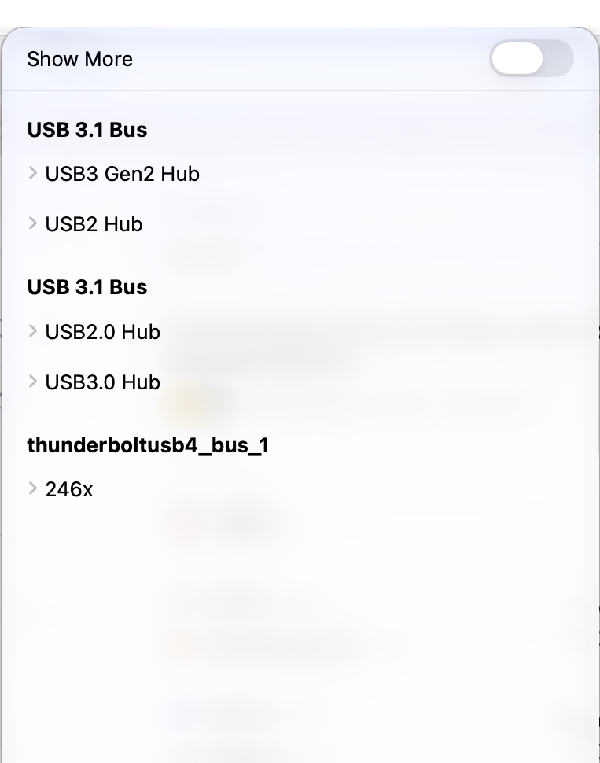

See real connection speeds
Read USB Link Speed and the current reported speed and status of Thunderbolt / USB4 ports.
macOS · USB / Thunderbolt / USB4
Check the live device tree from the menu bar. See actual USB and Thunderbolt / USB4 link speeds, then switch to details when you need more.

Not a product specification: the device tree, connection rate, and port status that macOS sees right now.
Read USB Link Speed and the current reported speed and status of Thunderbolt / USB4 ports.
Inspect buses, hubs, and nested devices. Expand entries for vendor, media, and power-allocation details.
Refresh automatically and notify on device changes. Connected Bluetooth devices can show battery level and charging status.
USB-C Speed stays in the menu bar, with a compact view for a quick check and a detailed device tree one switch away.
Open USB-C Speed. It registers as a login item the first time it runs.
Click the bolt icon to see connected USB, Thunderbolt, and USB4 devices.
Switch to the detailed view to inspect the device tree, reported speeds, and port status.
USB-C Speed is made by Owen Zhao, an independent developer building focused native tools for Apple platforms.
It is a small, open-source utility for making one everyday question easier to answer: is this connection performing as expected?
For macOS 26 or later. The project is open source and can be built directly with Xcode.